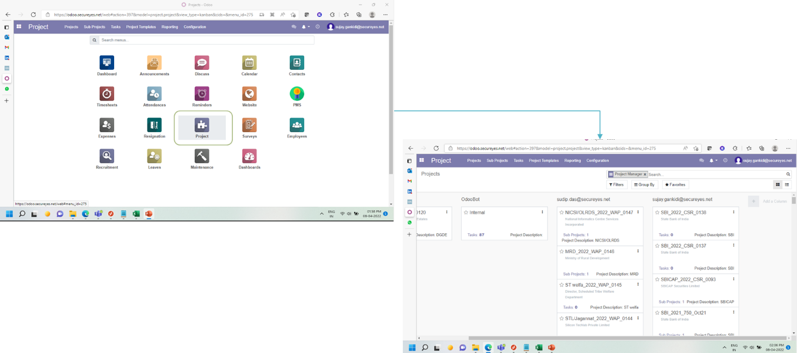
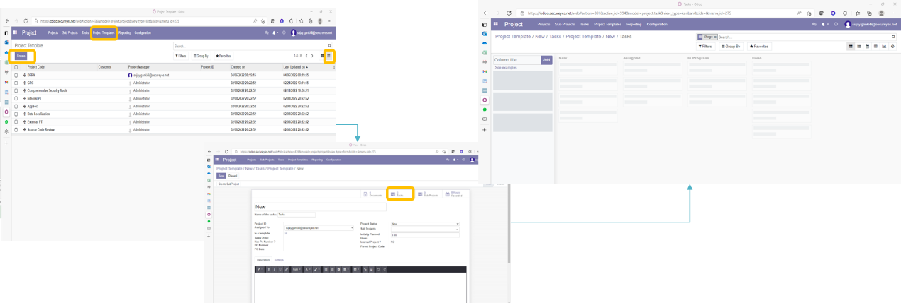

ODOO PROJECT MANAGEMENT
CONTENT
Introduction
Roles
Creating Project Templates
Creating Projects and allocating Resources
Entering Time Sheets
INTRODUCTION
Odoo is an opensource ERP and CRM suite with ability to automate entire business operations including but not limited CRM, HR operations, billing, accounting, Project management and Inventory management. SecurEyes has Implemented Odoo to automate its project management workflow end-to-end including relevant HR, Sales and Finance operations to enable effective tracking of projects and efforts spent on all operational activity. This guide specifies the flow of events and various roles involved in the project management module and provides detailed steps to perform all Project Management activity including Project Creation, Allocation of resources, reporting project status and recording efforts spent on each activity by Associates based on their timesheet entries. Odoo deployed on production shall be accessible at “https://odoo.secureyes.net/”SCOPE
This document is applicable to all employees and contractors of SecurEyes who are on Billable or Non-billable roles. All departments including support departments shall use Odoo PM module to allocate and track their daily activity and report the efforts put on each activity to senior management. All associates are required to comply with the guidelines as described by HR and non-compliance with Odoo requirements is punishable as per the Odoo Non-compliance policy published by SecurEyes HRODOO ADVANTAGE
Automation of the end-to-end project management Process One stop-shop for Individual and project level activity tracking Avoid filling multiple trackers for the same activity (Internal/Client) Single application to track leaves and daily attendance Customise reports to show the status based on various parameters Centrally manage project and task allocations Single platform to manage HR, Sales, Project Management, Performance management and LeavesROLES
1. Program Manager Program manager shall be responsible to evaluate the type of projects received by various teams and create required Project templates to accommodate the various activity performed in each type of project, also program manager shall be responsible to generate reports and track status of all projects across each department.2. Project Manager Project manager shall be responsible for managing individual projects, Identification of necessary templates, allocation of resources, allocation of team leads and tracking of over all project status and billing.
3. Project Lead Project Leads shall be responsible for allocating the individual tasks to associates at a granular level and update the resource allocation as the project progresses, Leads are required to ensure all associates update their Time sheets and attendance daily.
4. Auditor Auditors are required to login and logout every day and capture the details of work performed daily for the projects that were allocated to them by Project managers and tasks allocated by project Leads
PREREQUISITES
Projects are created by Sales team based on the PO received from customers and allocated to respective Project managers Users are created by HR and onboarded with necessary roles by IT Odoo hosted on cloud and is accessible over Internet to all employees’ vendors and potential Hires with their respective entitlements Periodic security review of the deployed and newly incorporated modules/components is performed, and all identified issues are fixed by respective stake holders No user will perform unauthorized testing or activity which may compromise the integrity of the data or impact the confidentiality of personal information beyond their permitted use/role.ACCESS TO PM MODULE
Project Management Module can be accessed by selecting the Project Icon from Dashboard. By default, project management module is only accessible to Program managers, Project Managers and Project Leads Only Auditors are not required to access Project module.
CREATING PROJECT TEMPLATES
Role: Program Manager Frequency: when a new project type is identified, when new tasks are required to be added to existing project types, when new business verticals are initiated Steps: Project - > Project Templates -> Create Enter the Name of the Task -> Select Task -> and enter the list of tasks for each stage. Tasks can be created in the List view and reorganized in the Kanban view